The UNet
Part 1.1.
The denoiser is a small UNet. On the way down the image goes from 28 × 28 to 14 × 14 to 7 × 7 while the channels go from D to 2D. At the bottom, Flatten averages each 7 × 7 map down to one number and Unflatten turns it back into 7 × 7. The way up doubles the size twice. Before each step up I concatenate the tensor of the same size from the way down, so the detail lost by downsampling comes straight back.
Every block is a convolution, then BatchNorm, then GELU. A 3 × 3 kernel with stride 1 and padding 1 keeps the size, stride 2 halves it, and a transposed convolution with kernel 4, stride 2 and padding 1 doubles it. The last layer is a plain convolution with no BatchNorm or GELU, so the output can be any value.
Noising MNIST digits
Part 1.2.
To make training pairs I add Gaussian noise to a clean digit:
z = x + σε, ε ~ N(0, I)
I used the same ε for every σ, so only the strength of the noise changes along a row.
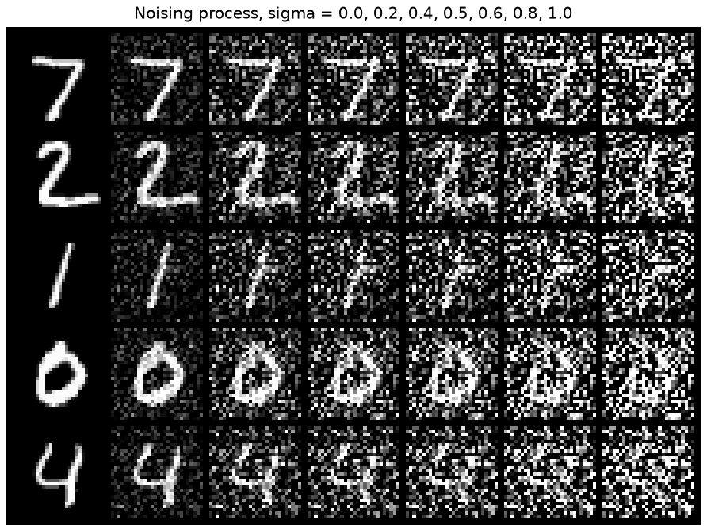
Training a one-step denoiser
Part 1.2.1.
I trained the UNet with D = 128 to map z back to x with an L2 loss, at σ = 0.5, for 5 epochs with Adam at lr 1e-4 and batch size 256. The noise is drawn fresh for every batch, so the network never sees the same noisy image twice. The test digits and their noise are the same in both pictures.
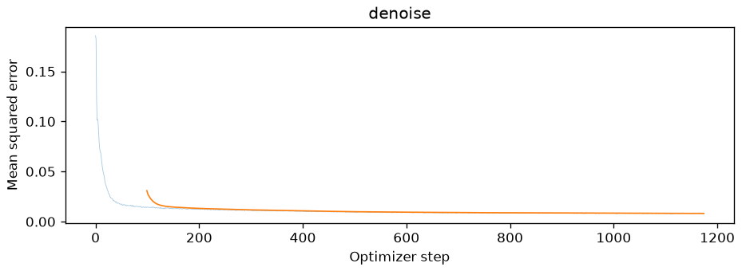
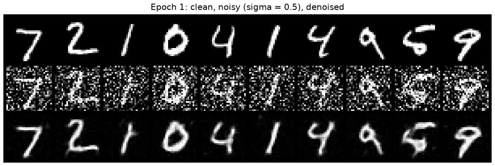
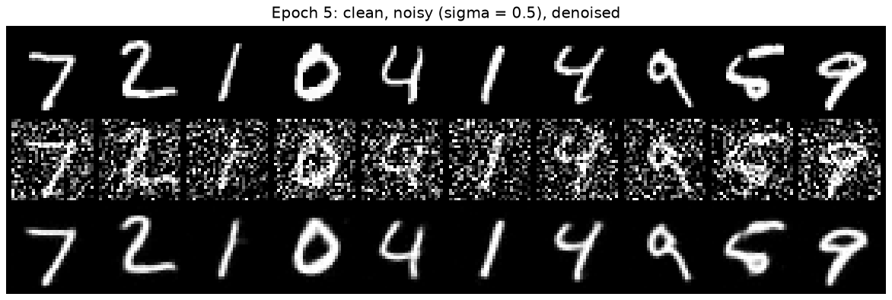
The loss drops from 0.19 to under 0.02 in the first 60 or so steps and ends just under 0.01. After 1 epoch the digits are back but soft, with a little gray haze left around them, and the loop of the 5 is filled in with a gray blob. After 5 epochs the haze is gone and the strokes are sharper. The outputs are still a bit smoother than the clean digits. With an L2 loss, when the network can't tell exactly where an edge was, it hedges and blurs it.
Out-of-distribution noise
Part 1.2.2.
Next I gave the model, trained only at σ = 0.5, three test digits at other noise levels.
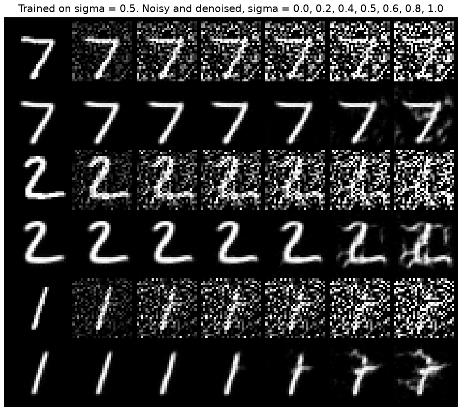
At σ = 0 the input is already clean and the model leaves it alone. Up to 0.5 the outputs are clean, and at 0.6 the 1 picks up a small tick. At 0.8 gray smudges show up around the digits, and at 1.0 the model starts keeping some of the noise as if it were stroke: the 2 gets blotches and the 1 grows a crossbar, so it looks like a 7. The model only ever saw σ = 0.5, so it learned to remove that much noise and no more.
Denoising pure noise
Part 1.2.3.
Here the input is pure noise, z ~ N(0, I), and the target is still a clean digit. Same UNet and settings, 5 epochs.
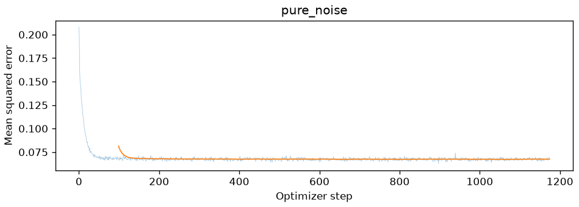
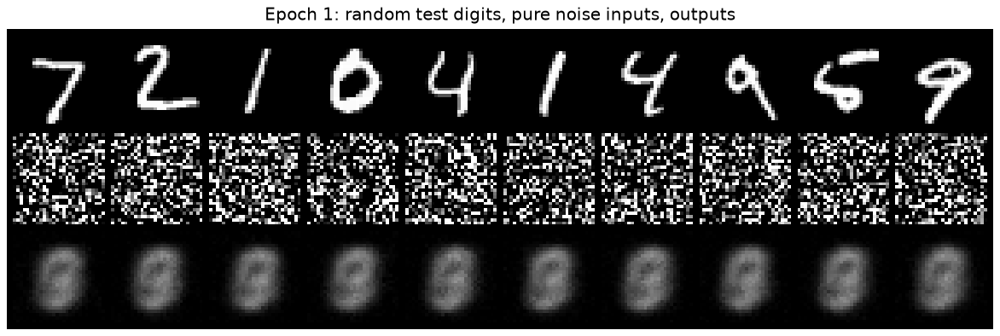
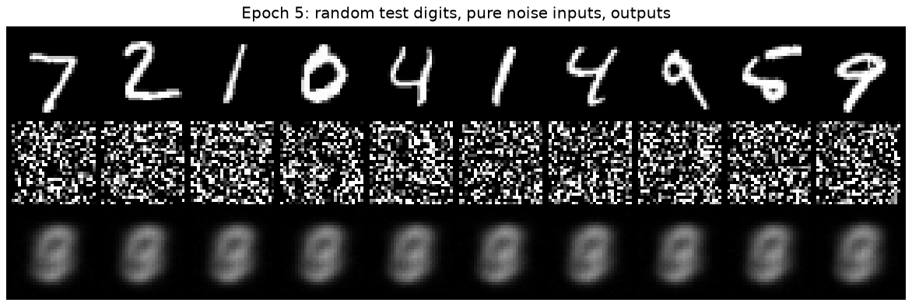
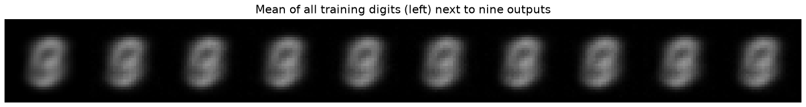
The loss falls from 0.21 to about 0.068 in the first 50 steps and then stays flat. If you always guess the average training digit, the loss is 0.0673, so the network found that average and can't do any better.
Every output is the same gray blob, after 1 epoch and after 5, no matter which noise goes in. It's an oval like a 0 with the loops of an 8 and a 9 faintly inside, brightest down the middle where most digits have ink. So it isn't any one class but all ten blended together. The notebook prints that the outputs are 0.0001 away from the mean training digit and 0.0001 away from each other, and next to the mean they look the same. The input says nothing about which digit is the target, so with an L2 loss the best guess is the average of all the targets. This is why sampling in the next part takes many small steps instead of one jump from pure noise.
Adding time to the UNet
Parts 2.1 and 2.2.
For flow matching the UNet also gets the time t. I put t through two FCBlocks (Linear, GELU, Linear) to get one number per channel, then multiply the Unflatten output and the first UpBlock output by them. That lets the network act differently when its input is mostly noise (t near 0) and when it is almost clean (t near 1).
Training follows Algorithm 1. I draw noise x0 and t ~ U[0, 1], mix xt = (1 − t)x0 + tx1, and train the UNet to predict x1 − x0, the velocity along the straight line from the noise to the digit. D = 64, batch size 64, Adam at lr 1e-2 and an exponential scheduler with gamma 0.11/10, stepped every epoch, so the lr drops by 10 times over the 10 epochs.
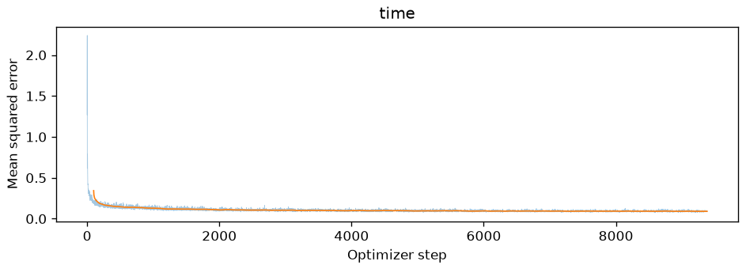
The loss falls from about 2 to under 0.2 in the first few hundred steps, then creeps down to about 0.1. It can't reach 0. The same noisy image could have come from many pairs of noise and digit, so the best the UNet can do is predict the average velocity over all of them.
Sampling
Part 2.3.
To sample I start from pure noise and take 50 Euler steps of size 1/50. Each step moves x a little along the velocity the UNet predicts. The seed is fixed, so the three pictures start from the same noise.
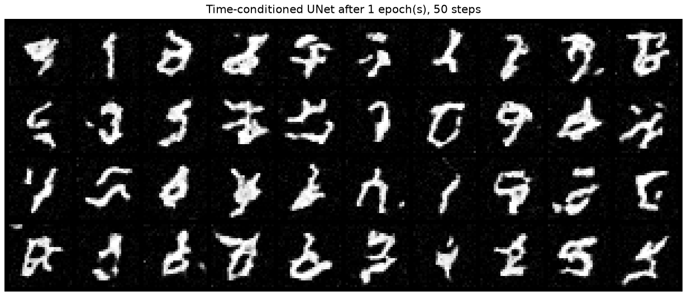
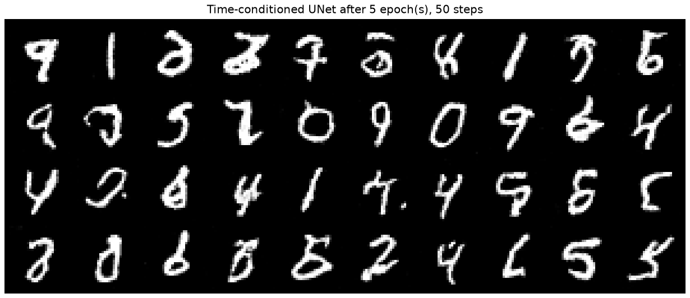
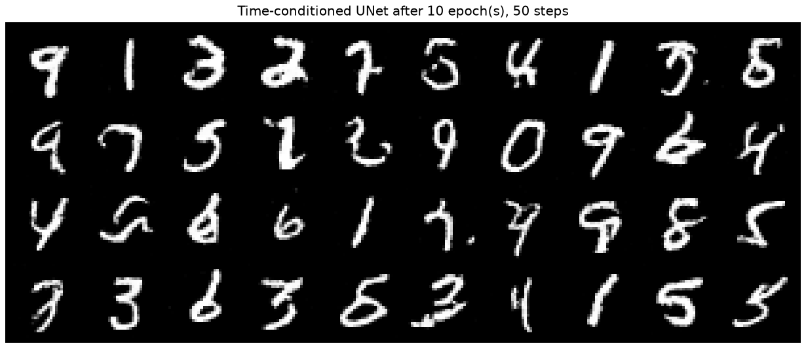
After 1 epoch most samples are squiggles made of digit strokes, and the background still has some speckle. A few already work, like the 1, the 0 and the 9. After 5 epochs the speckle is gone and most of them read as digits. After 10 epochs the strokes are cleaner. About 6 of the 40 still aren't clear digits, like the S-shaped squiggle in the third row.
Every grid starts from the same noise, so each spot keeps mostly the same digit from epoch 5 to 10. A few change as the model gets better: the ∂ in the first row turns into a 3, and the ? second from the left in the second row turns into a 7. I can't choose which digit comes out of a given noise. That's what the class is for in the next part.
Adding the class
Parts 2.4 and 2.5.
Next the UNet also gets the digit as a one-hot vector, through two more FCBlocks. The class scales the same two tensors and the time shifts them: c1 · unflatten + t1. For 10% of the training images I set the one-hot vector to zero, so the same network also learns to work without a class. The rest of the training is the same as for time only.
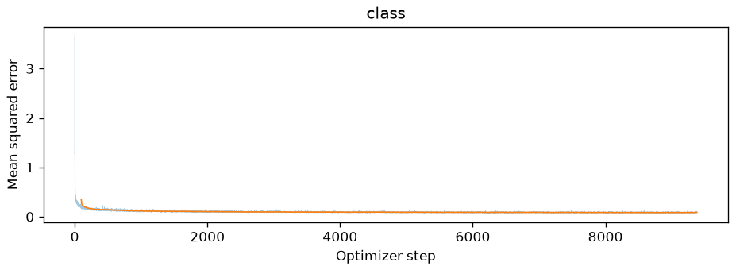
The loss looks like the time-only one: a big drop in the first few hundred steps, then a slow slide to about 0.1. Knowing the class doesn't lower it much. I think that's because for most t the noisy image already shows which digit it is, so the class only helps near t = 0.
Sampling with guidance
Part 2.6.
Sampling uses classifier-free guidance with γ = 5. Each of the 300 steps runs the UNet once with the class and once without, then moves along uuncond + γ(ucond − uuncond). The difference points toward looking more like that digit, and γ = 5 goes five times as far that way.
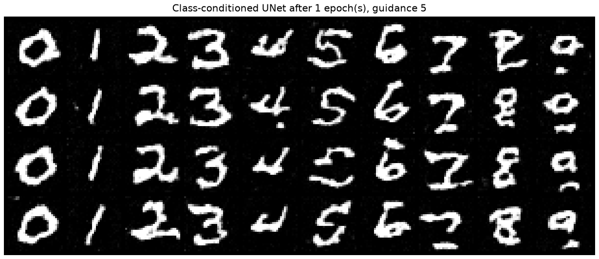
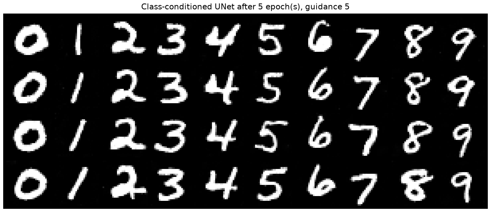
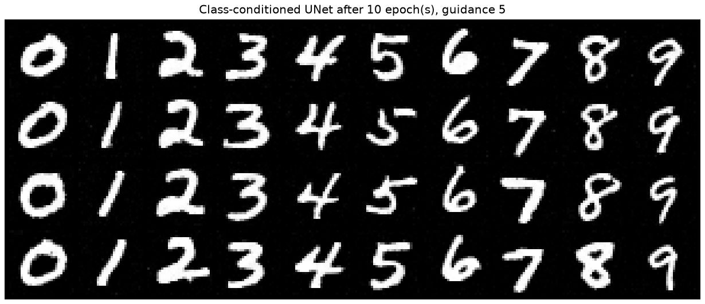
After 1 epoch every column already has the right digit, but the strokes are thick and bumpy and the background has speckle. Some digits are only half there: the 7s have a crossbar like a Z, the 9s are a loop with a loose stroke under it, and the 4s are open at the top. After 5 epochs all 40 are clean, and after 10 the strokes are a little smoother. The four copies in a column differ in slant and thickness, so the class picks the digit and the noise picks the style. Compared with section 07, every sample is the digit I asked for, and they look clean much sooner.
Without the scheduler
Part 2.6, the last question.
The scheduler takes the lr from 1e-2 down to 1e-3. A high lr makes fast progress at the start but keeps the weights bouncing around at the end, and the decay fixes that. To make up for the missing scheduler I lowered the lr and kept it constant at 1e-3, the value where the scheduled run ends, and changed nothing else. Nothing shrinks the steps at the end anymore, so I started at the small end. I expected that to cost some early progress, so I checked whether 10 epochs is still enough.
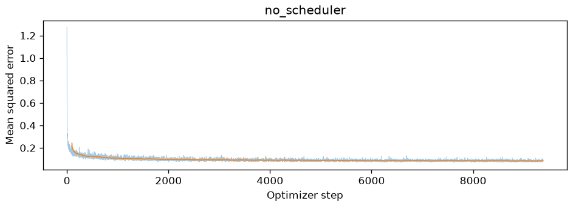
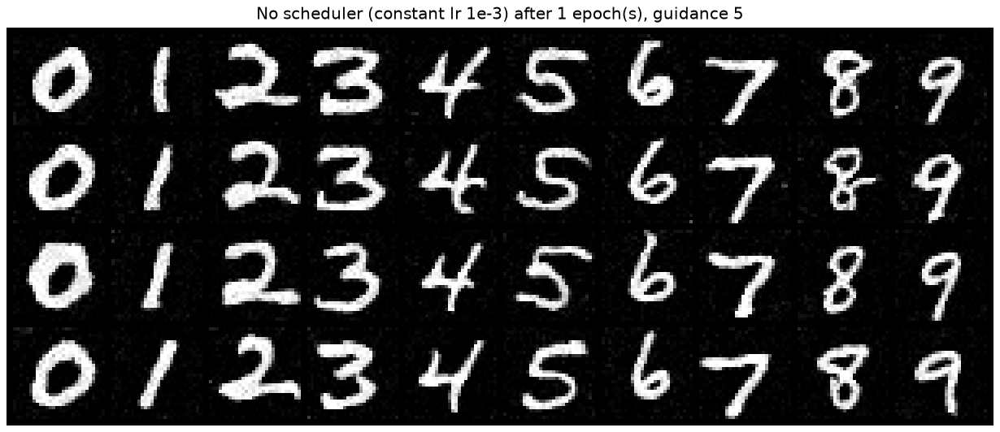
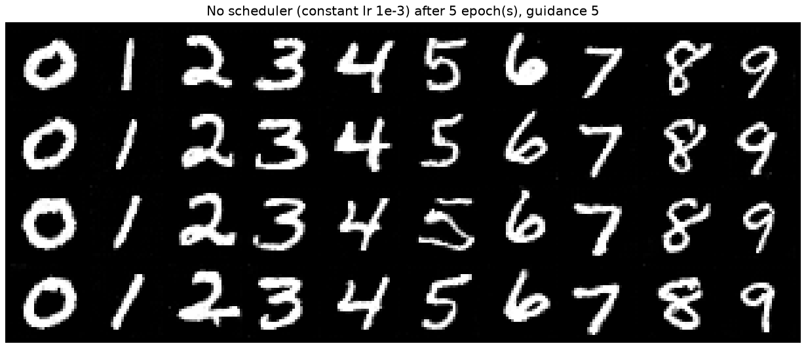
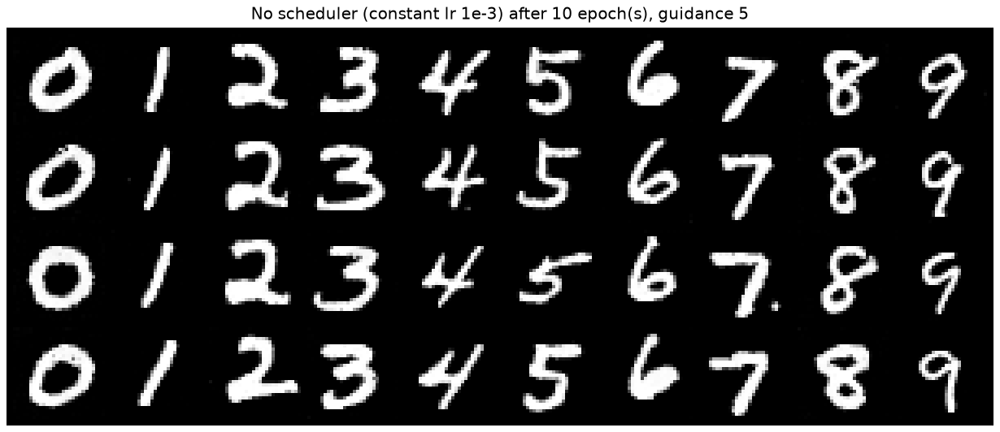
After 5 and 10 epochs the samples are as good as with the scheduler, and the loss ends at about the same place, so 10 epochs is enough.
The surprise was epoch 1. The constant 1e-3 run is better there: every digit is already clean, while the scheduled run, starting at 1e-2, still made Z-shaped 7s and broken 9s. For this small model the high starting lr doesn't buy anything I can see. The scheduled run's epoch 10 is a bit cleaner, though: this one has a stray dot next to the thick 7 in the third row. Both runs start from the same noise, so the same spot often has the same style in both, like that thick 7 and the slanted 1s.